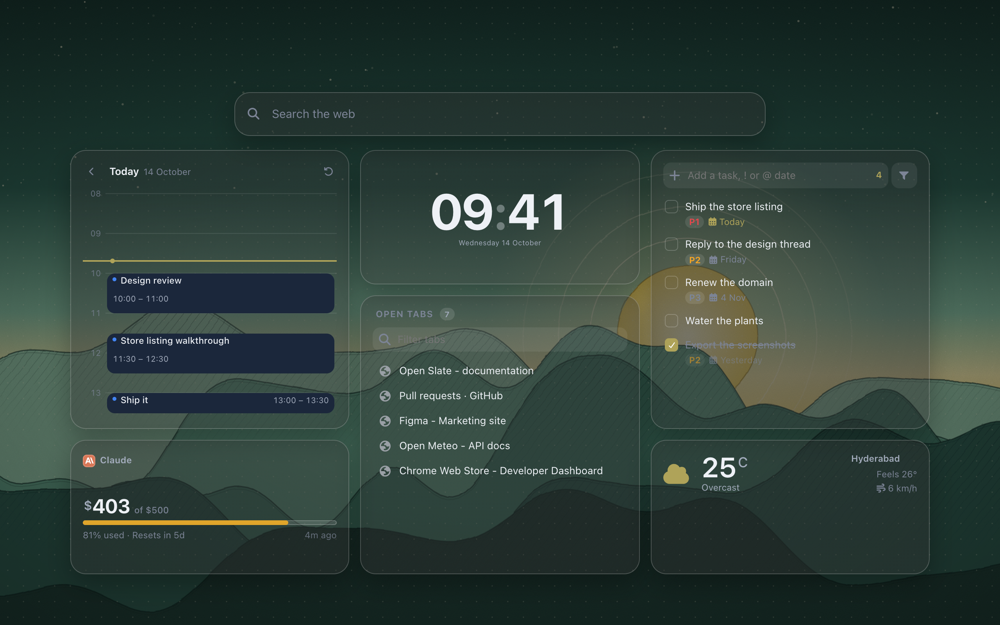
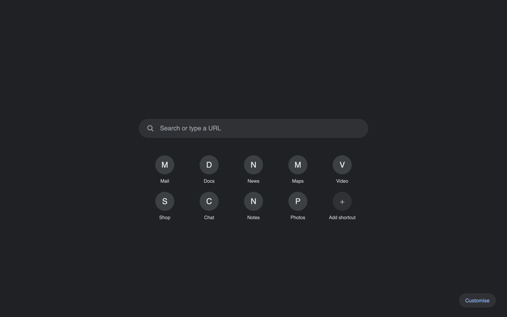
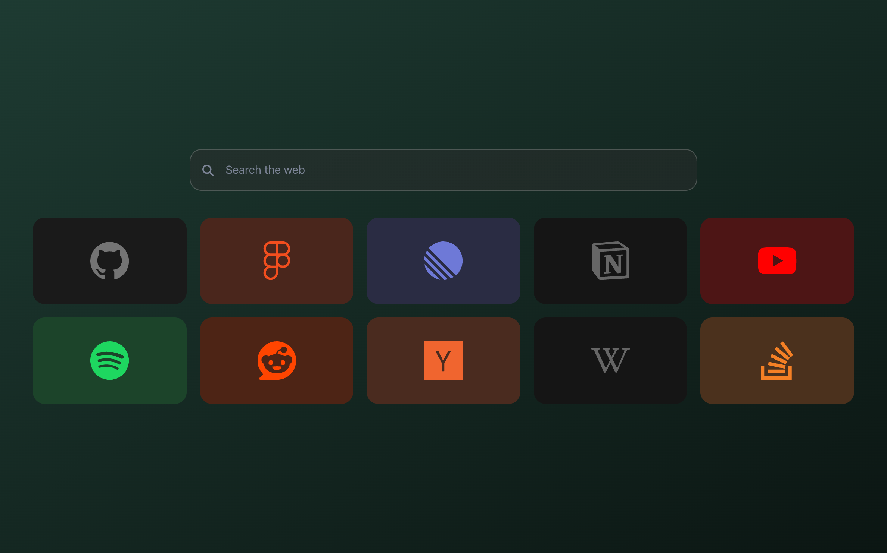
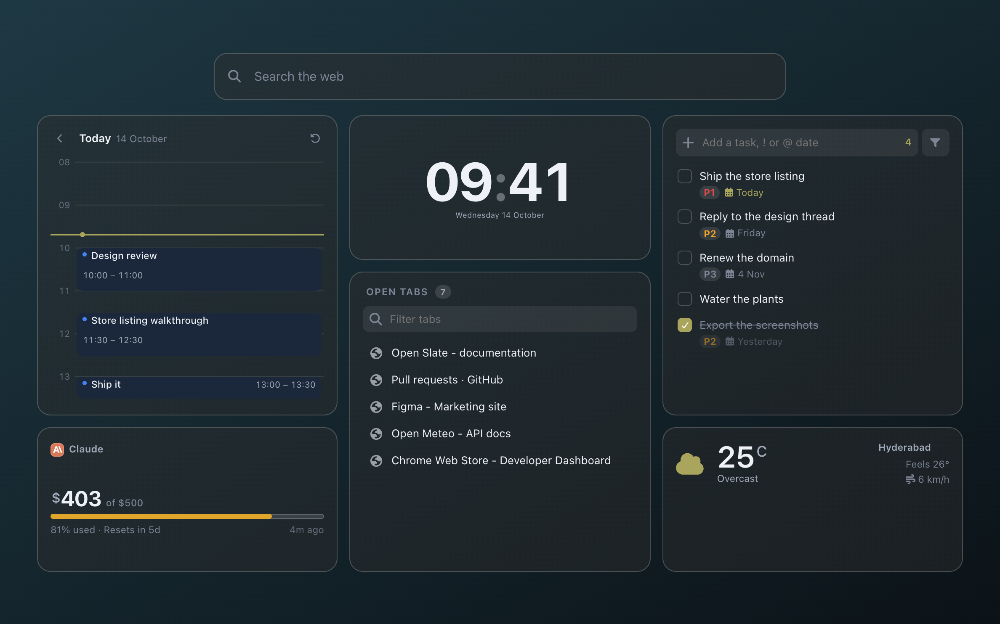
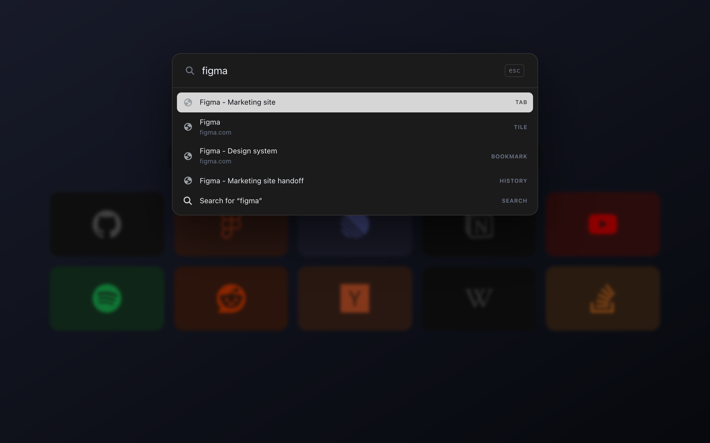
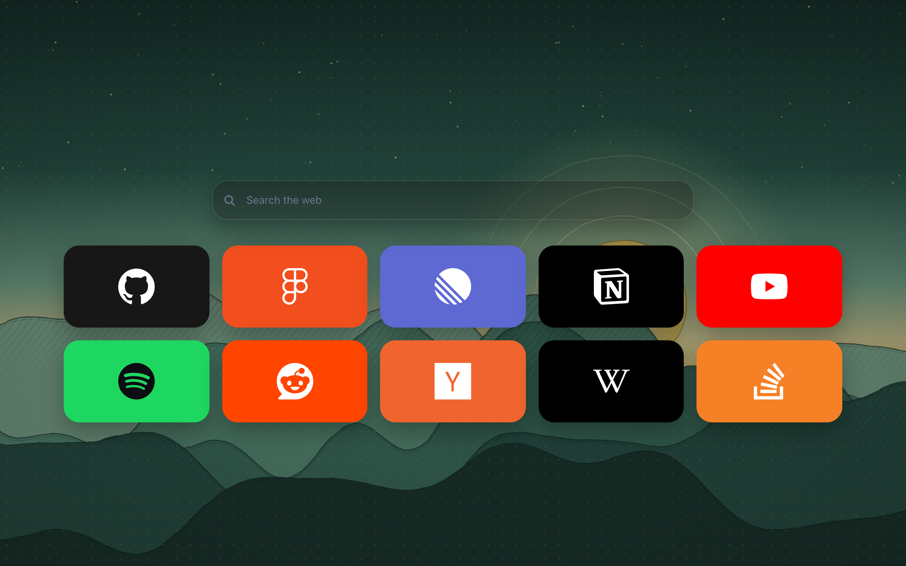

Your new tab, rebuilt
A blank tab is a blank page. Sketch on it.
A speed dial and dashboard for Chrome. Free, open source and no account needed.


Before AfterDrag to compare
Built around the page you open most.
Most new tab replacements give you a photo and a clock. Open Slate gives you the page you would have built yourself, if you had the time.




Each tile uses the site's own logo and colour. Sites without a bundled logo get their favicon, enlarged on a plate tinted to match, so the grid stays consistent.
- Plates, or round icons with the title underneath
- Folders, and named pages for the rest
- Alt+1 to Alt+9 opens a tile by position
- Add the page you are on from the toolbar button
- Paste an image URL or upload your own
Eighteen widgets, and none of them overlap.
Widgets snap to a grid of square cells in five sizes. Growing or moving one shifts whatever was in the way, at every window size.
- Clock, weather, calendar, notes and greeting
- Tasks with priorities, due dates and filters
- Pomodoro, countdown and stopwatch in one timer
- Claude and ChatGPT usage, and Spotify controls
Ctrl+K or Cmd+K searches your tabs, tiles, bookmarks, history and every settings command at once. Web search is the fallback.
- Uses your browser's default search engine
- Suggestions come from your own data
- Type a host and it opens instead of searching
- Arithmetic works inline
Eight palettes, automatic light and dark, a corner radius from fully round to fully square, four surface styles, and an accent sampled from your wallpaper.
- Wallpaper as a colour, gradient, image, video or slideshow, with eleven built in
- Dim, blur, brightness, zoom and vignette
- Every setting is searchable
- Changes apply live in every open tab
And everything else.
Open a row for the full list.
All widgets
- Clock with ten faces, weather, calendar, notes, greeting
- Tasks, timer, RSS feeds, crypto prices
- Claude and ChatGPT usage, Spotify
- Recently closed, most visited, open tabs, bookmarks, history, downloads
Clock faces
Ten faces, including one that spells the time out and one that counts in binary. The clock has the most faces, but every other widget has its own settings too.
Tile styles
Four plate styles apply to every tile at once, including favicon tiles.
- Brand: the plate takes the site's colour
- Neutral: the theme surface with a coloured logo
- Tinted: a wash of the brand colour
- Transparent: no plate at all
Folders and pages
Folders hold what you rarely need, and named pages split the rest. A grid of ten scales to a grid of fifty without becoming a wall.
Usage and Spotify
The Claude and ChatGPT widgets read the account you are already signed in to. There is no API key and no second login, and a small tile shows the meter closest to its limit.
The Spotify widget controls whichever device is playing. Spotify grants playback access per registered app, so the widget walks you through making your own. It takes about two minutes, once, and the access is yours to revoke.
Wallpapers
A wallpaper can be a colour, a gradient, an image, a video or a slideshow that changes on a timer or on every new tab. The library lives in IndexedDB on your machine and nothing is uploaded.
Sharing and sync
- Export your whole configuration, or import it elsewhere
- Theme codes carry the look, slate codes carry the layout
- Neither carries your tiles, notes, tasks or addresses
- Starter layouts, and opt-in sync across devices
Settings
Every preference is declared once and the interface renders itself from that declaration, so no settings screen lags behind what the extension can do. Search any setting by name, and changes apply live in every open tab.
It asks for nothing.
A new tab page sees every tab you open. That is exactly why this one collects nothing, and why most of what it can do stays switched off until you ask for it.
Read the full policy →No analytics
No telemetry, no crash reporting, no identifiers. Nothing is collected, transmitted or sold.
No content scripts
The extension runs on its own page and nowhere else. It cannot read the sites you visit, because it never runs on them.
Permissions on use
It installs with eight permissions, none of which can read the contents of another site. The toolbar button uses activeTab, which sees only the current page's address and title, and only when you click it. Tabs, history, bookmarks, downloads, sessions and scripting are requested the moment you add the widget that needs one, and declining leaves the rest working.
Your data stays put
Settings and tiles live in local storage, and wallpapers in IndexedDB. Nothing is uploaded, and sync is off unless you turn it on, per device.
No location prompt
Geolocation is never declared and never called. The weather widget places itself from a city-level lookup, or you type a town.
Every outbound call is optional
Weather, a one-off city lookup, coin prices, the feeds you added, the usage widgets reading your own account, Spotify if you connect it, and a Google font if you add one. Each sits behind a widget you chose and a permission you granted.
Usage is read, not relayed
The Claude and ChatGPT widgets read the numbers from your own signed-in tab on that site, and keep them on your device. There is no API key and no third party, and nothing about your conversations is read, only the limits the site shows you.
Spotify signs in to Spotify
Spotify grants playback access per registered app, so the widget walks you through making your own in about two minutes. The access is yours, not ours. Connecting sends you to Spotify's own consent screen, and we never see your password. The token it returns is stored on your device and used only to read what is playing and to pass on the button you pressed. Disconnect from the widget and it is deleted.
Check the claims yourself.
The whole extension is public under the MIT licence. Read the network calls, audit the permissions, then build the exact thing you installed.
- Auditable
- Forkable
- No account or server
Built in the open.
Everyone who has landed a commit in the repository, read from GitHub as you load the page.
Good first issues are labelled, and the contributing guide covers the build in four commands.
Before you install.
What does it look like the moment I install it?
A search box, one clock, and a grid seeded from your most-visited sites, with nothing to configure before it is useful. Everything else is opt-in: you add the widgets you want, and the permissions come with them.
Will it slow my new tab down?
The page is a static bundle loaded from disk with no remote code and no blocking network calls on open. Widgets that fetch, such as weather, feeds and coin prices, render from a local cache first and refresh behind it.
Why does the feeds widget mention broad host access?
RSS feeds live at addresses only you know, so there is no fixed list to declare. The broad pattern is declared as optional and never requested wholesale: adding a feed asks for that one origin by name. A fresh install declares one host, the search suggestions endpoint, and nothing is sent to it if you turn suggestions off.
Can I move my setup to another machine?
Export the whole configuration to a file and import it anywhere, or turn on sync per device. Theme codes carry the look and slate codes carry the arrangement of your widgets. Neither carries your tiles, notes, tasks or widget addresses, so you can share a setup without sharing anything personal.
What happens to my data if I uninstall?
It goes with the extension. Everything lives in Chrome's local storage for this extension and in IndexedDB. There is no server holding a copy. Export first if you want to keep it.
Can it match my Chrome theme?
Not exactly. Chrome does not expose an installed theme's colours to extensions, only whether you are in light or dark mode. Open Slate offers automatic light and dark, eight palettes, and an accent sampled from your wallpaper, which comes close.
Does the weather widget use my precise location?
No. Chrome does not let geolocation be optional, and one widget is not worth a location warning on every install. Weather is placed from an approximate, city-level lookup, and you can correct it by typing a town.
Ready when you are
Take back the page you open most.
Free, MIT licensed, and it works the moment it installs.